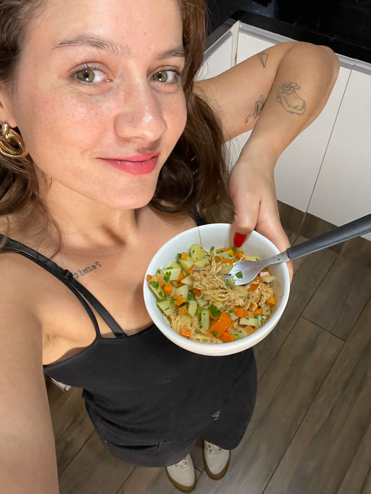
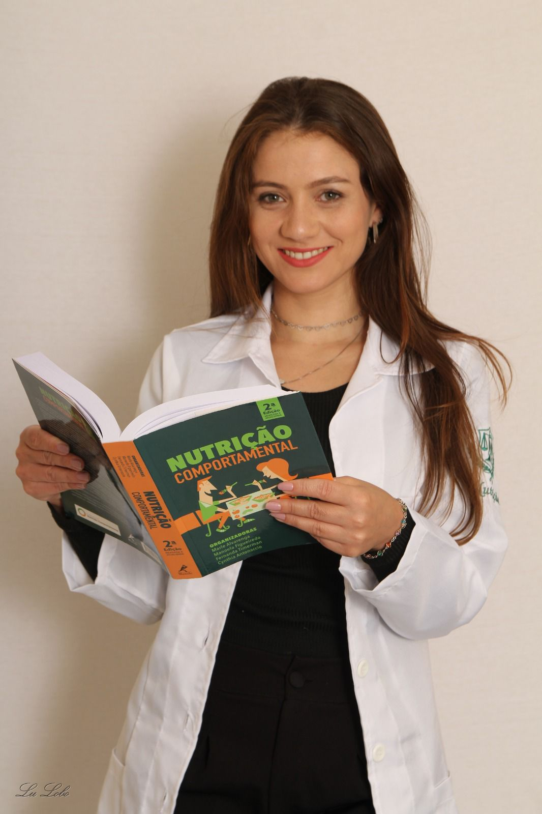

Arquivo do Blog
Conteúdos, dicas e orientações da Natasha para uma rotina alimentar equilibrada.

Como montar um prato equilibrado no almoço
Guia simples para equilibrar proteínas, carboidratos e legumes no dia a dia.
Receber no WhatsApp5 lanches saudáveis para levar ao trabalho
Ideias práticas para evitar longos períodos em jejum e melhorar sua energia.
Receber no WhatsApp
Hidratação e hábitos que realmente funcionam
Como criar uma rotina de hidratação sem esquecer de beber água.
Receber no WhatsApp
Estratégias para o fim de semana
Dicas para manter o foco sem abrir mão de momentos especiais.
Receber no WhatsApp